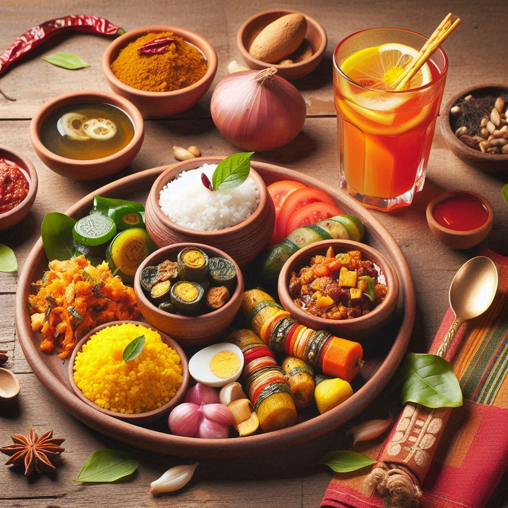
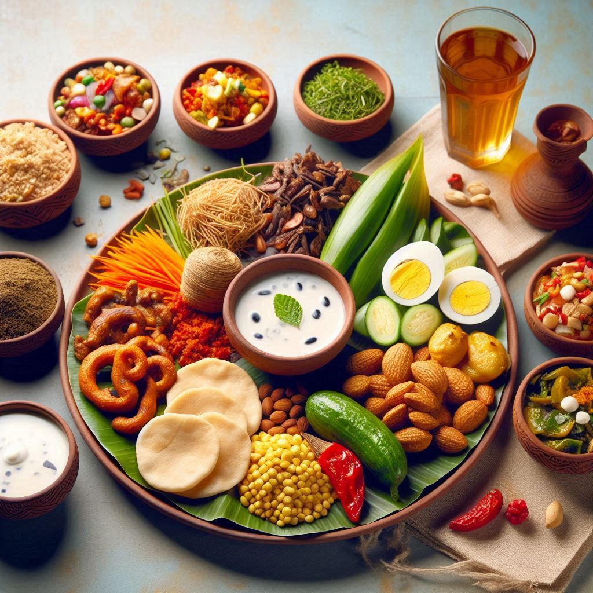

Jharkhand's cuisine is a reflection of its rich tribal culture, traditional agricultural practices, and local produce. The food is simple, nutritious, and flavored with indigenous herbs and spices. The state's cuisine is deeply rooted in its agrarian lifestyle, featuring a wide range of dishes made from grains, lentils, vegetables, and forest produce. Here are some key aspects of Jharkhand's food culture:
1. Dhuska
- Description: Dhuska is one of Jharkhand's most popular dishes, often served as a breakfast or snack item.
- Ingredients: Made from a batter of rice and urad dal (black gram lentils), deep-fried until crispy and golden brown.
- Serving: Served with ghugni, a spicy curry made from black chickpeas or green peas.
2. Litti-Chokha
- Description: Litti-Chokha is a popular dish, consisting of litti (wheat flour dough stuffed with roasted gram flour, spices, and ghee) baked or roasted over a fire.
- Chokha: A side dish made from mashed roasted vegetables like eggplant, potato, and tomato, mixed with mustard oil, onions, and spices.
3. Handia
- Description: Handia is a traditional rice beer made by fermenting rice with a mix of herbs and roots known as ranu tablets.
- Usage: Handia is consumed during festivals, ceremonies, and social gatherings, providing refreshment and energy.
4. Thekua
- Description: Thekua is a sweet snack made from whole wheat flour, jaggery, and coconut, deep-fried and shaped into small discs.
- Occasions: It is commonly prepared during festivals like Chhath Puja, known for its long shelf life and delicious taste.
5. Rugra (Wild Mushrooms)
- Description: Rugra, a variety of wild mushrooms, is a seasonal delicacy, often cooked with spices, onions, and garlic.
- Seasonal Delight: These mushrooms are sought after and typically available during the monsoon season.


6. Bamboo Shoots
- Description: Bamboo shoots are an important ingredient, used in curries, pickles, and chutneys, providing a tangy and aromatic touch to dishes.
7. Chilka Roti
- Description: A savory pancake made from rice flour and urad dal, often served as a breakfast item or snack.
- Serving: Typically served with pickle, chutney, or vegetable curry.
8. Pitha
- Description: Steamed or fried dumplings made from rice flour, filled with jaggery and coconut or savory lentils and vegetables.
- Usage: Pithas are often made during festivals and celebrations as a special treat for guests.
9. Sattu Paratha
- Description: Sattu paratha is made by stuffing whole wheat dough with roasted sattu (ground gram flour), mixed with spices and herbs.
- Serving: Typically served with curd, pickle, or chutney, known for being high in energy.
10. Aloo Chokha and Rice
- Description: A simple, hearty meal consisting of mashed potatoes (aloo chokha) mixed with spices and mustard oil, served with steamed rice.
- Staple Diet: It is a common meal in Jharkhand households.
11. Tilkut
- Description: A sweet made from roasted sesame seeds (til) and jaggery or sugar, formed into crunchy discs.
- Seasonal Specialty: It is particularly made during winter, especially around Makar Sankranti.
12. Tomato Chutney
- Description: A tangy and spicy condiment made from ripe tomatoes, mustard seeds, green chilies, and mustard oil.
- Serving: Often paired with rice, rotis, or snacks.
13. Traditional Green Leafy Vegetable Dishes
- Description: Dishes made from green leafy vegetables like poi saag (Malabar spinach) and koinar saag (drumstick leaves).
- Preparation: These vegetables are cooked with minimal spices to retain their natural flavor and nutritional value.
14. Mahua Dishes
- Description: Mahua flowers are used in sweet dishes, fermented drinks, and savory recipes in tribal communities.
- Cultural Importance: Mahua holds cultural and economic significance, especially among indigenous populations.
Jharkhand’s food reflects its connection to nature and agricultural practices, with a focus on earthy flavors, seasonal ingredients, and hearty meals. The cuisine offers a unique blend of rustic simplicity and traditional recipes passed down through generations.